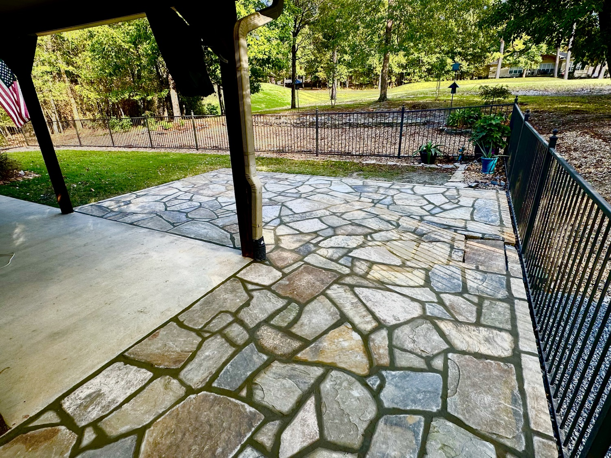
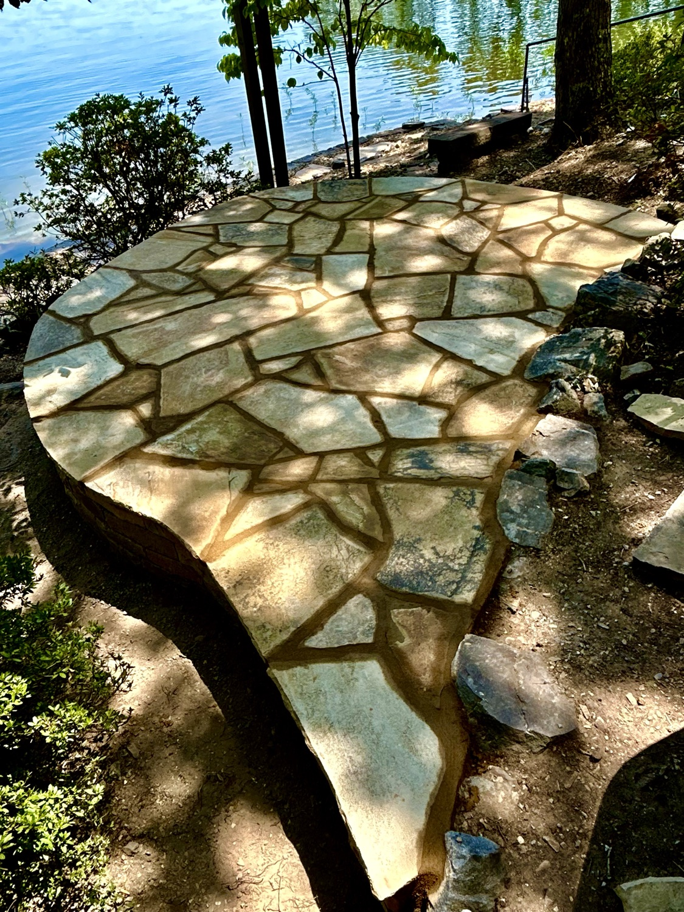
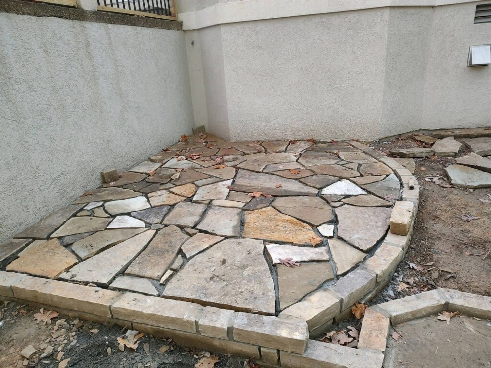
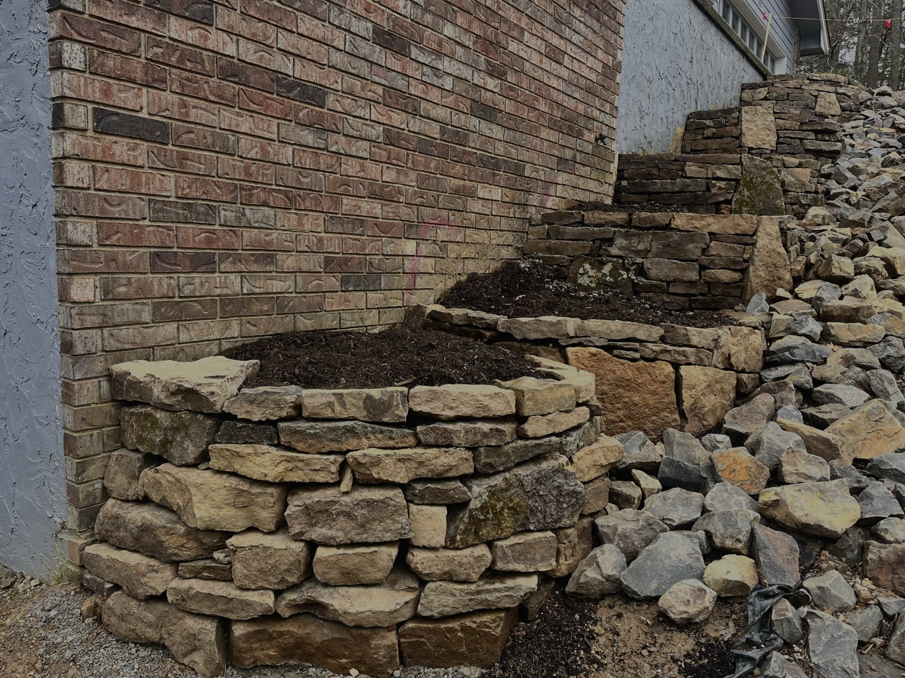

Stone Patios · Hot Springs Village, Arkansas
We build flagstone patios by hand, one fitted stone at a time. Lakeside, on the golf course, in a courtyard or under a covered porch, the patio should fit the house and the lot it sits on.
★★★★★ 5.0 from 17 Google reviews · Family-owned · Landscaping since 1998
A patio is only as good as what is under it. We excavate, compact a base, and set each stone tight so joints stay narrow and the surface stays level.
The photos here are our own work: a large flagstone patio overlooking a golf course, a lakeside patio, a curved courtyard patio against stucco, and a patio wrapped around a brick pillar. Sloped, wooded and waterfront lots are normal for us.
Our own work




"Great to work with from start to finish! The workmanship is second to none and they worked well with my budget."
Common questions
Yes. Stone and flagstone patios, walkways and steps are a core part of our work in Hot Springs Village and Hot Springs.
Yes. Most Village lots slope. We use steps, low walls and terraces to make a level patio where the ground is not.
Many exterior projects in the Village need a permit from the POA before work starts. Ask the POA's permitting office what your project needs. We can give you the drawing, materials and measurements they ask for.
Call or text, Monday to Friday 8am to 3pm. After hours, leave a message and Derrick calls you back.
More: Hot Springs Village · Fire Pits · Retaining Walls · Landscape Design · Mountain Pine · Home